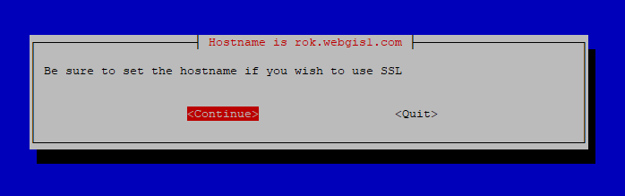

Installation¶
Installation is done via the GeoHelm Installer.
Check Hostname¶
While you can use GeoHelm with only an IP address, if you wish to use SSL, be sure to set the hostname.
You can check using the ‘hostname’ command
root@suite:~# hostname
suite
If the full hostname is not set, use hostnamectl to set the full hostname:
root@suite:~# hostnamectl set-hostname suite.domain.com
Use the hostname command to verify the full hostname is now set:
root@suite:~# hostname
suite.domain.com
Note
If using Rocky Linux, you may need to install wget before running the Installer. You can do using ‘yum -y install wget’
Run the Installer¶
On a fresh Ubuntu 22 or Rocky Linux 9 installation, as root:
wget https://raw.githubusercontent.com/AcuGIS/geohelm/master/scripts/geohelm-installer.sh && chmod +x geohelm-installer.sh && ./geohelm-installer.sh
The above will start the installer


Tab to the OK button and hit enter

A reminder is displayed to set the hostname. If you have set the hostname, or do not wish to use SSL, hit continue

A prompt will ask you if you would like GeoHelm to provision a free SSL certificate using LetsEncrypt

The installation progressed is displayed as below.

A full installation on Ubuntu takes about 3 to 4 minutes to complete installation.
A full installation with Rocky Linux can take 10-15 minutes due to manual OSM build required.
Upon completion the display will show as below:
Installation is now completed.
Access pg-tileserv at http://YourIP:7800
Access pg-featureserv at http://YourIP:9000
postgres and crunchy pg passwords are saved in /root/auth.txt file
The passwords are also stored in the file /root/auth.txt following set up
Enable SSL¶
If you did not have the GeoHelm installer enable SSL, you can use the script below to issue a certificate and configure Apache, the control panel, and pg_tileserv for SSL.
wget https://raw.githubusercontent.com/AcuGIS/geohelm/master/scripts/build-ssl.sh && chmod +x build-ssl.sh && ./build-ssl
After a few moments you should see the success message below:
Successfully received certificate.
Certificate is saved at: /etc/letsencrypt/live/suite.domain.com/fullchain.pem
Key is saved at: /etc/letsencrypt/live/suite.domain.com/privkey.pem
This certificate expires on 2023-09-19.
These files will be updated when the certificate renews.
Certbot has set up a scheduled task to automatically renew this certificate in the background.
Deploying certificate
Successfully deployed certificate for suite.webgis1.com to /etc/apache2/sites-available/000-default-le-ssl.conf
Congratulations! You have successfully enabled HTTPS on https://suite.domain.com
- - - - - - - - - - - - - - - - - - - - - - - - - - - - - - - - - - - - - - - -
If you like Certbot, please consider supporting our work by:
* Donating to ISRG / Let's Encrypt: https://letsencrypt.org/donate
* Donating to EFF: https://eff.org/donate-le
- - - - - - - - - - - - - - - - - - - - - - - - - - - - - - - - - - - - - - - -
SSL is now enabled for Apache, control panel, pg_tileserv, and pg_featursrv
Troubleshooting¶
GeoHelm creates a log file for each installation process.
The files are located in the /tmp directory (screenshot below).
If installation fails, check the last log file generated to see the cause of the failure.

Removing the Control Panel¶
If you do not wish to use the control panel for any reason, it can be removed using below.
Removing the control panel has no effect on any of the components (PostGIS, GeoServer, etc…)
root@suite:~# ./etc/webmin/uninstall.sh